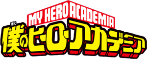
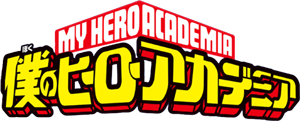

My Hero Academia > Sobre
Saiba um pouco sobre o administrador do site
por Willian Sibertino
Atualizado em 16/Abril/2016
O Início de um Herói !!!
O enredo do manga se passa numa época em que a grande maioria das pessoas do mundo nascem com individualidades que mais tarde concedem poderes como de criar explosões, ter supervelocidade, usar a gravidade e a eletrecidade; e dentre outras citadas nele. Dentro dessa história existe um garoto chamado Mydoria Izuki que nasceu sem nenhuma individualidade. Ele tenta a todo custo ser tornar um herói mesmo sem poderes e seu maior sonho é de ser o numero um do mundo em heroísmo igual ao superherói mundial ALL MIGHT. Só que a sociedade repreende muito pessoas que nascem sem individualidades comparando a seres inferiores. E por sua surpresa ele acha um jeito de ser tornar herói, mas seu caminho não será nada fácil comparado as pessoas que já nascem com individualides.
E ai caros internautas gostaram de um pedaçinho do resumo de Boku no Hero ? O que vocês estão esperando leia o manga ou baixe o anime já...
E um bom PLUS ULTRA para todos vocês...
Nosso Objetivo
Este site foi pensado e criado para o universo de Boku no Hero Acedemia citando todas as informações contidas no manga e tenho a intenção de incentivar o leitor internauta a baixar ou ler o manga dessa obra fantástica. E se ainda quiser assistir o anime temos opções de download dos episódios em formatos MP4 e MKV. Depois que todos os episódios foram postados na WEB será postado um link da temporada completa para baixar pelo Mega.
Saiba mais sobre nós...
Eu me chamo Willian, sou programador, iniciando a carreira como desenvolvedor WEB, este site é um projeto no qual eu me esforço para melhorar minhas habiliades em criar sites. Sou cinefólio de carteirinha, adoro ler mangas e assitir animes. E espero que gostem do site, qualquer recomendação de melhorias para o site eu aceito, também aceitamos parcerias. É so enviar para o "email:contato@BokunoHero.com".